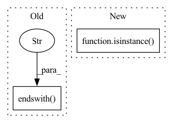

Pattern ID :5021
Before Change
// Check if source is a valid local/remote URL
split_path = urllib.parse.urlsplit(source)
if split_path.scheme == "":
if source.endswith("/" ) :
with ux_utils.print_exception_no_traceback():
raise exceptions.StorageSourceError(
"Storage source paths cannot end with a slash "After Change
"the default behavior for S3 and GCS syncing.")
// Check if source is a list of paths
if isinstance( source, list) :
// Check for conflicts in basenames
_check_basename_conflicts(source)
// Validate each pathIn pattern: SUPERPATTERN
Frequency: 3
Non-data size: 2
Instances Fragment ID: 17735110
Project Name: skypilot-org/skypilot
Commit Name: 30476aada4d2d6cef06fc8bcd6a49eef34934d91
Time: 2022-11-22
Author: romil.bhardwaj@gmail.com
File Name: sky/data/storage.py
M Class Name: Storage
N Class Name: Storage
M Method Name: _validate_source(3)
N Method Name: _validate_source(3)
M Parent Class: object
N Parent Class: object
M File Name: sky/data/storage.py
N File Name: sky/data/storage.py
M Start Line: 467
M End Line: 517
N Start Line: 501
N End Line: 546
Before Change
)
if keypoints:
if path.endswith(".id" ) or path.endswith(".label"):
keypoints = False
parent = fieldAfter Change
is_keypoints = issubclass(
parent.document_type, (fol.Keypoint, fol.Keypoints)
)
is_list_field = isinstance( field, fof.ListField)
if is_keypoints and is_list_field:
expr = _make_keypoint_list_filter(args, view, path, field)
else: Fragment ID: 17735108
Project Name: voxel51/fiftyone
Commit Name: b691096b1537ea1e5e4b6e5ab446967caa7b4a9d
Time: 2023-02-06
Author: lanzhen@voxel51.com
File Name: fiftyone/server/view.py
M Class Name: AnonimousClass
N Class Name: AnonimousClass
M Method Name: _make_filter_stages(4)
N Method Name: _make_filter_stages(4)
M Parent Class:
N Parent Class:
M File Name: fiftyone/server/view.py
N File Name: fiftyone/server/view.py
M Start Line: 316
M End Line: 394
N Start Line: 308
N End Line: 394
Before Change
// TODO: backard compatibility for users without audio dependencies
array, sampling_rate = (
self._decode_example_with_torchaudio(value)
if value.endswith(".mp3" )
else self._decode_example_with_librosa(value)
)
return {"path": value, "array": array, "sampling_rate": sampling_rate}
After Change
Returns:
dict
path, file = (value["path"], BytesIO(value["bytes"])) if isinstance( value, dict) else (value, None)
if path.endswith("mp3"):
array, sampling_rate = self._decode_mp3(file if file else path)
else: Fragment ID: 17735107
Project Name: huggingface/datasets
Commit Name: 07872f7454d86728efe9e3b79e3054699b8c1d1e
Time: 2021-11-17
Author: 8515462+albertvillanova@users.noreply.github.com
File Name: src/datasets/features/audio.py
M Class Name: Audio
N Class Name: Audio
M Method Name: decode_example(2)
N Method Name: decode_example(2)
M Parent Class:
N Parent Class:
M File Name: src/datasets/features/audio.py
N File Name: src/datasets/features/audio.py
M Start Line: 41
M End Line: 45
N Start Line: 70
N End Line: 78